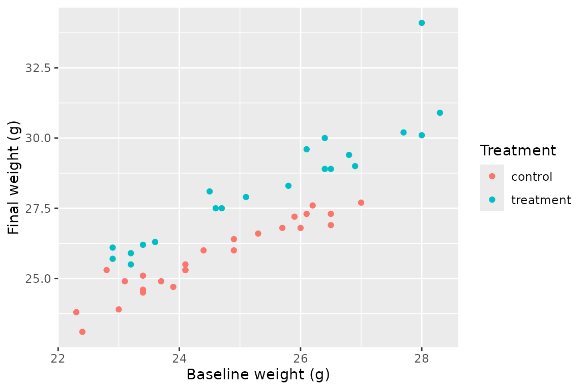

BIOSCI504 installs the R packages used in Days 1–4 and
provides the course data, projects, and exercise templates.
First installation on Windows
Use this route if BIOSCI504 is not already installed. It
installs the released Windows binary and does not require Rtools.
options(repos = c(CRAN = "https://cloud.r-project.org"))
install.packages(
"pak",
repos = sprintf(
"https://r-lib.github.io/p/pak/stable/%s/%s/%s",
.Platform$pkgType,
R.Version()$os,
R.Version()$arch
)
)
pak::pkg_install(
sprintf(
paste0(
"BIOSCI504=url::https://github.com/cohmathonc/BIOSCI504/",
"releases/latest/download/BIOSCI504-windows-R-%s-x86_64.zip"
),
paste(R.version$major, sub("\\..*$", "", R.version$minor), sep = ".")
),
upgrade = FALSE
)Updating an existing installation on Windows
Use this route if BIOSCI504 is already installed. Save
your work and restart R before updating the package. Do not load
BIOSCI504 in the new session. Then run:
pak::pkg_install(
sprintf(
paste0(
"BIOSCI504=url::https://github.com/cohmathonc/BIOSCI504/",
"releases/latest/download/",
"BIOSCI504-windows-R-%s-x86_64.zip?reinstall"
),
paste(R.version$major, sub("\\..*$", "", R.version$minor), sep = ".")
),
upgrade = FALSE,
ask = FALSE
)Restart R again after the installation finishes.
Check your setup
Run the setup check before the first class:
BIOSCI504::check_setup()The check reports every problem it finds and suggests a fix. RStudio may be reported as a warning when the check is run from a terminal.
Create a course project
Choose a folder that is easy to find:
BIOSCI504::create_course_project("~/BIOSCI504")Open ~/BIOSCI504/BIOSCI504.Rproj in RStudio before
continuing. This keeps course files together, applies the course
repository settings, and makes relative paths predictable.
Copy an exercise
From the course project, copy the Day 2 template:
BIOSCI504::copy_template("tabular-comparison")The template is copied to exercises/tabular-comparison.
Existing work is not replaced unless you explicitly request it. Updating
the package does not change an exercise that has already been
copied.
Work with course data
Load the package and tidyverse, then inspect the bundled mouse trial:
library(BIOSCI504)
library(tidyverse)
data(mouse_trial)
glimpse(mouse_trial)
#> Rows: 48
#> Columns: 7
#> $ mouse_id <chr> "M001", "M002", "M003", "M004", "M005", "M006", "M00…
#> $ treatment <chr> "treatment", "treatment", "control", "treatment", "c…
#> $ sex <chr> "male", "male", "male", "male", "female", "female", …
#> $ baseline_weight_g <dbl> 26.9, 26.8, 26.0, 27.7, 24.1, 24.1, 23.4, 22.9, 23.2…
#> $ final_weight_g <dbl> 29.0, 29.4, 26.8, 30.2, 25.3, 25.3, 25.1, 26.1, 25.5…
#> $ cage <chr> "C01", "C01", "C01", "C01", "C01", "C01", "C01", "C0…
#> $ batch <chr> "B02", "B03", "B01", "B02", "B01", "B03", "B03", "B0…A quick plot is often the best next check:
ggplot(
mouse_trial,
aes(
x = baseline_weight_g,
y = final_weight_g,
colour = treatment
)
) +
geom_point() +
labs(
x = "Baseline weight (g)",
y = "Final weight (g)",
colour = "Treatment"
)
#> Warning: Removed 2 rows containing missing values or values outside the scale range
#> (`geom_point()`).